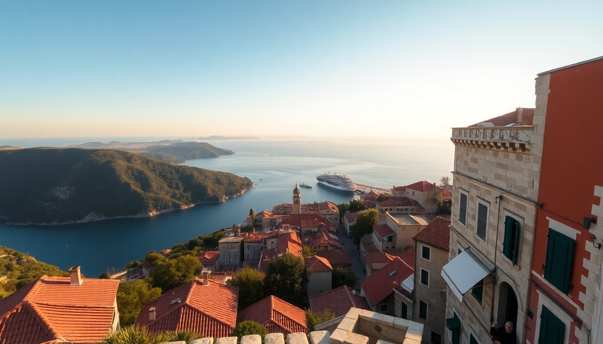

Best Time to Visit Croatia: Month-by-Month Guide

I’ve spent three different seasons bouncing around Croatia—from a sweaty July ferry in Hvar to a rainy November morning in Zagreb—and the “best” time really depends on what you’re after. This guide breaks down each month so you can pick your window without the marketing gloss.
When is the peak season and should you avoid it?
Peak season runs from mid-July through August. The Adriatic coast—Dubrovnik, Split, and Hvar—gets slammed. I walked the Stradun in Dubrovnik at 10 AM in August and could barely move. Ferry lines to Hvar stretched for an hour. Hotel prices in Split’s Diocletian’s Palace area, like Hotel Vestibul Palace, can hit €400 a night.
- Dubrovnik city walls feel like a conga line. Go at 8 AM or skip entirely.
- Hvar town nightlife is loud and packed, but the Pakleni Islands beaches stay calmer if you take a water taxi.
- Split’s Riva waterfront is shoulder-to-shoulder. Konoba Fetivi still serves good local food, but expect a wait.
If you hate crowds, avoid July and August. If you want guaranteed sun and party scene, this is your window.
What is the shoulder season like in Croatia?
May, June, and September are the sweet spot. I visited in early June and had warm sea temps (around 22°C) without the August chaos. Prices drop, and you can actually book a table at Zinfandel Restaurant in Zagreb without a reservation.
- May — Spring blooms in Plitvice Lakes National Park (less crowded, waterfalls at full roar). Zagreb feels alive with outdoor café culture at Tkalčićeva Street.
- June — Sea swimming is comfortable. Hvar beaches like Dubovica are still quiet. Split’s Marjan Hill offers a great sunset hike without the tourist crush.
- September — Water stays warm into early October. Dubrovnik’s Old Town is manageable. I did the Lokrum Island day trip without queueing.
Downside: some island ferries reduce frequency after mid-September, so check Jadrolinija schedules.
How is Croatia in the winter months?
Winter (November through March) is off-season on the coast, but Zagreb shines. I spent a December weekend in Zagreb and loved the Advent Christmas market—it won “Best Christmas Market” in Europe three years running. Dubrovnik and Split feel like ghost towns; many restaurants close until Easter.
- November — Rainy and grey in Split and Dubrovnik. Zagreb’s Museum of Broken Relationships is a good rainy-day stop.
- December — Zagreb’s markets at Ban Jelačić Square and Zrinjevac Park are cozy. Coast is cold (8-12°C) but cheap—rooms at Hotel Dubrovnik Palace drop to €100.
- January-February — Skiing at Sljeme near Zagreb. Diocletian’s Palace in Split is nearly empty, which makes for great photography.
- March — Still chilly, but Hvar starts waking up. Fortica Fortress views are clear and crowd-free.
If you want solitude and lower prices, winter is fine—just don’t expect beach weather.
What about Easter and spring shoulder months?
April and early May are transitional. I went in late April and got a mix of sunny 18°C days and sudden downpours. The upside: everything is green, and Plitvice Lakes has fewer tourists than summer.
- Easter week — Hvar has a traditional procession called “Za Križen” (Following the Cross) that’s unique and not touristy.
- April — Split’s Green Market (Pazar) is full of fresh asparagus and strawberries. Zagreb’s Dolac Market is buzzing.
- Early May — Dubrovnik’s Game of Thrones walking tours start picking up, but you can still enjoy Fort Lovrijenac without the selfie-stick crowds.
Downside: many island accommodations and restaurants don’t open fully until June. Call ahead.
Which month is best for budget travelers?
October and November offer the best deals—especially for accommodation. I booked a sea-view room at Hotel Bellevue Dubrovnik in mid-October for €120, versus €350 in August. Flights from the US and UK drop to half of peak prices.
- October — Sea swimming is still possible in early October (20°C). Hvar town is quiet; Konoba Menego serves hearty lamb peka without the queue.
- November — Lowest prices of the year. Zagreb’s Museum of Illusions is a fun indoor option. Split’s Diocletian’s Cellars are empty.
Trade-off: weather is unpredictable. I had a 26°C day in mid-October and a 12°C rainy day the next. Pack layers.
When should you visit for outdoor activities?
For hiking, cycling, and kayaking, stick to May, June, or September. Summer heat (35°C+) makes long treks miserable. I kayaked around Elaphiti Islands from Dubrovnik in June and it was perfect—warm but not scorching.
- May — Best for Plitvice Lakes (less crowded, lush greenery). Biokovo Nature Reserve near Makarska opens its scenic road.
- September — Ideal for Paklenica National Park hiking (cooler temps, fewer people). Krka National Park swimming is still allowed until end of month.
- June — Pelješac Peninsula wine trails (Dingac region) are lovely for cycling. Ston’s oyster farms run tours.
Avoid August for any land-based activity unless you love sweating.
FAQ
Is it worth visiting Dubrovnik in July? Only if you can handle crowds. The Old Town is gridlocked from 10 AM to 6 PM. Stay inside the walls at Hotel Stari Grad for early-morning walks, or take a Game of Thrones tour at 7 AM to beat the rush. Otherwise, pick June or September.
Can you swim in Croatia in October? Yes, early October. Sea temps hover around 20-21°C on the Dalmatian coast. I swam at Hvar’s Mekićevica Beach on October 10th and it was fine. By late October, it drops to 18°C—doable but chilly.
What’s the cheapest month to fly to Croatia? November. I found round-trip flights from New York to Zagreb for under $500. From the UK, budget carriers like Ryanair fly to Zadar for as low as £30. Just expect cold weather and limited ferry schedules to the islands.
Conclusion
- May, June, and September are the best all-around months: good weather, manageable crowds, and reasonable prices.
- July and August are for sun-seekers who don’t mind crowds and high costs—book everything in advance.
- October and November are ideal for budget travelers and city-focused trips (Zagreb, Split).
- Winter works for Zagreb’s Christmas markets and cheap coastal stays, but most island life shuts down.
- April and early May are a gamble on weather but reward you with empty sights and green landscapes.